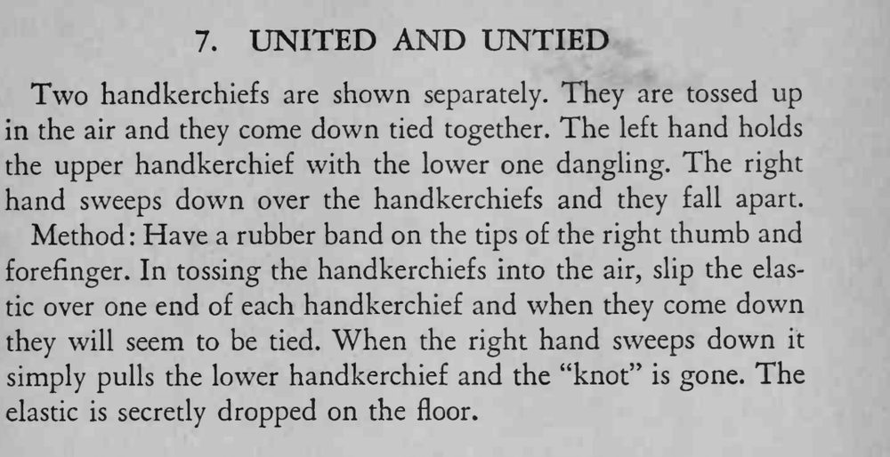

两条手帕分别展示后抛向空中，落下时竟连在一起打了个结；手一撸，它们又分开落下。
抛手帕和套橡皮筋要在同一个动作里完成，别让观众看清手部细节。

Two handkerchiefs are shown separately. They are tossed up in the air and they come down tied together. The left hand holds the upper handkerchief with the lower one dangling. The right hand sweeps down over the handkerchiefs and they fall apart. Method Have a rubber band on the tips of the right thumb and forefinger. In tossing the handkerchiefs into the air, slip the elastic over one end of each handkerchief and when they come down they will seem to be tied. When the right hand sweeps down it simply pulls the lower handkerchief and the "knot" is gone. The elastic is secretly dropped on the floor.